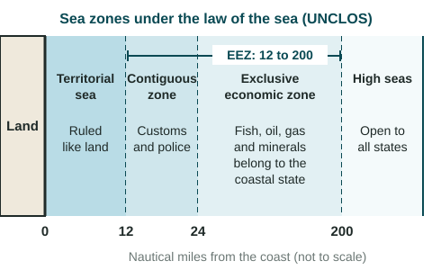

Every boundary does a job. Some barely slow travelers; others stop almost everyone. This topic covers how a boundary is set up, why boundaries are disputed, how they shape the way people interact, and how states divide the sea.
From words to the ground
A boundary usually goes through four stages:
- Defined: a treaty or agreement describes the line in words ("the main channel of the river, then a straight line to the mountain").
- Delimited: surveyors draw the line on official maps.
- Demarcated: workers mark it on the ground with posts, stones, fences, walls or, at sea, buoys.
- Administered: the states run it day to day, with customs posts, passport checks and rules for crossing.
Not every boundary gets all four. Many boundaries in deserts and mountains are defined and delimited but barely demarcated; a few, such as the line between North Korea and South Korea, are marked by fences, mines and guard posts along their whole length.
Why boundaries are disputed
Boundaries are often disputed. A dispute can be about the wording of a treaty, about where exactly the line runs, about how the border is run, or about resources that lie under it. Rivers cause many location disputes because they move. When the Rio Grande shifted its course in the 1860s, the United States and Mexico argued for a century over a strip of land in El Paso, Texas; they settled it in 1963. Disputes over resources can be serious: when an oil field lies under a boundary, both states want its oil.
Some boundaries follow cultural or national lines, and others follow economic interests or the decisions of outside powers. At the Berlin Conference of 1884 and 1885, European powers set rules for claiming land in Africa. No African rulers took part. Over the following decades the powers drew borders that grouped some peoples together and split others, and most of those lines became the borders of independent states.
Boundaries shape identity and interaction
A boundary can be open or closed. Inside most of Europe's Schengen Area, people usually drive from one member state to another with no passport check, so at the regional scale the boundaries barely slow the flow of people and goods. Members may bring back checks for a time: as of June 2026, nine of them, among them France and Germany, ran temporary checks at some internal borders (European Commission, 2026). At the other extreme, a demilitarized zone (DMZ) is a strip along a boundary where armed forces are not allowed. The Korean DMZ, set up by the 1953 armistice, is about 4 km wide and about 250 km long, and almost no one crosses it. Boundaries also shape identity: people on each side learn different national histories, use different money and often come to see themselves as different peoples.
Boundaries at sea

The United Nations Convention on the Law of the Sea (UNCLOS), adopted in 1982, sets the zones a coastal state may claim. Distances are in nautical miles (nm); one nautical mile is about 1.85 km. Each zone is measured outward from the coast (from a baseline, usually the low-water line along the shore).
| Zone | How far from the coast | What the coastal state controls |
|---|---|---|
| Territorial sea | Up to 12 nm | Rules it much as it rules land, though foreign ships may pass through peacefully |
| Contiguous zone | 12 to 24 nm | May enforce customs, immigration, tax and health laws |
| Exclusive economic zone (EEZ) | Up to 200 nm (beyond the territorial sea) | Has the rights to the fish, oil, gas and minerals; other states' ships may still sail through |
| High seas (international waters) | Beyond 200 nm | No state rules the water: ships of all states may sail and fish there |
The table leaves out the seabed: where the seabed next to a coast (the continental shelf, the shallow edge of a continent) runs on past 200 nm, UNCLOS lets it claim that seabed too, which is why states still argue over the Arctic seabed. A 200 nm EEZ is about 370 km wide, so a small island can bring a large area of sea. When two coasts are less than 400 nm apart, their EEZs overlap and the states must agree on a line, often halfway between them. That is one reason states care about small islands. In the South China Sea, China, Viet Nam, the Philippines, Malaysia, Brunei and Taiwan claim some of the same islands, reefs and waters. In 2016, an arbitral tribunal under UNCLOS ruled against China's broad claim; China rejects the ruling. A strong exam answer describes such claims without deciding who is right.